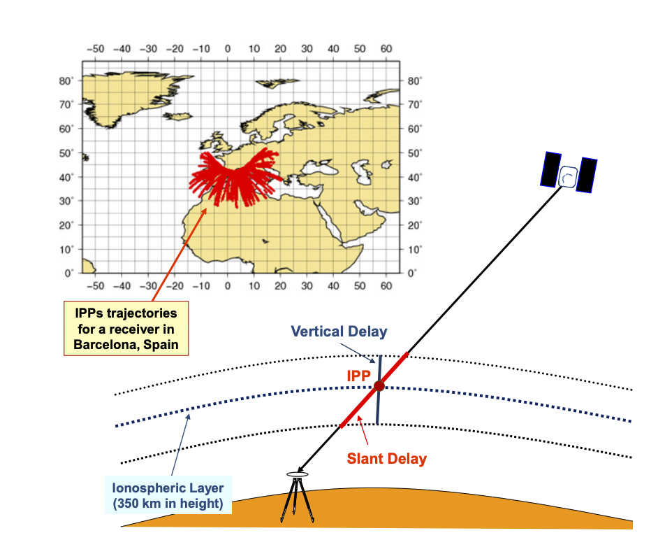

Klobuchar Ionospheric Delay Example
Klobuchar Model Description
The Klobuchar model is an empirical algorithm for single-frequency ionospheric delay correction in GPS and Beidou. It assumes the ionospheric electron content is concentrated in a thin shell at 350 km altitude. Using 8 broadcast coefficients ($\alpha_n$, $\beta_n$) and the user's position, satellite elevation, and azimuth, the vertical and slant ionospheric delay are estimated. The slant delay is computed from the vertical delay at the Ionospheric Pierce Point (IPP) using a mapping function. The figure below shows the geometry of the model:
Input Parameters
| Parameter | Value | Unit |
|---|---|---|
| Elevation angle ($E$) | 45.23456789012 | degrees |
| Azimuth ($A$) | 138.67890123456 | degrees |
| User latitude ($\varphi_u$) | 37.43678912345 | degrees |
| User longitude ($\lambda_u$) | 51.32456789012 | degrees |
| GPS time ($t_{GPS}$) | 259400 | seconds |
| $\alpha$ coefficients | [0.2335e-7, 0, 0.5960e-7, 0.1192e-6] | - |
| $\beta$ coefficients | [0.1464e6, 0.1966e6, 0, 0.1966e6] | - |
Step 1: Earth-centered angle ($\psi$)
This is the angle between the vector from the Earth's center to the receiver and the vector from the Earth's center to the Ionospheric Pierce Point (IPP). $h$ is the ionospheric shell height (typically 350 km), $R_E$ is the Earth's radius, and $E$ is the satellite elevation angle.
Step 2: Latitude of the IPP ($\varphi_I$)
This formula computes the latitude of the Ionospheric Pierce Point (IPP) based on the user's position and satellite angles.
Step 3: Longitude of the IPP ($\lambda_I$)
This formula computes the longitude of the IPP based on the user's position and satellite angles.
Step 4: Geomagnetic latitude of the IPP ($\varphi_m$)
$\varphi_P = 78.3^\circ$ and $\lambda_P = 291.0^\circ$ are the coordinates of the geomagnetic pole.
Step 5: Local time at the IPP ($t$)
This formula computes the local time at the IPP in seconds. If $t \geq 86400$, subtract 86400; if $t < 0$, add 86400.
Step 6: Amplitude of ionospheric delay ($A_I$)
The amplitude is computed using the $\alpha_n$ coefficients and the geomagnetic latitude. If $A_I < 0$, set $A_I = 0$.
Step 7: Period of ionospheric delay ($P_I$)
The period is computed using the $\beta_n$ coefficients and the geomagnetic latitude. If $P_I < 72000$, set $P_I = 72000$.
Step 8: Phase of ionospheric delay ($X_I$)
This phase is used to determine the temporal position of the ionospheric delay.
Step 9: Slant factor ($F$)
This factor is used to convert the vertical delay to the slant delay.
Step 10: Ionospheric time delay ($I_1$)
This is the ionospheric time delay in seconds, valid for the GPS L1 signal.
Step 11: Convert time delay to meters
By multiplying the time delay by the speed of light, the ionospheric delay in meters is obtained.
Summary
- The Klobuchar model provides a simple and fast correction for single-frequency GNSS signals.
- In this example, the total ionospheric delay on the L1 signal is 2.01 meters.